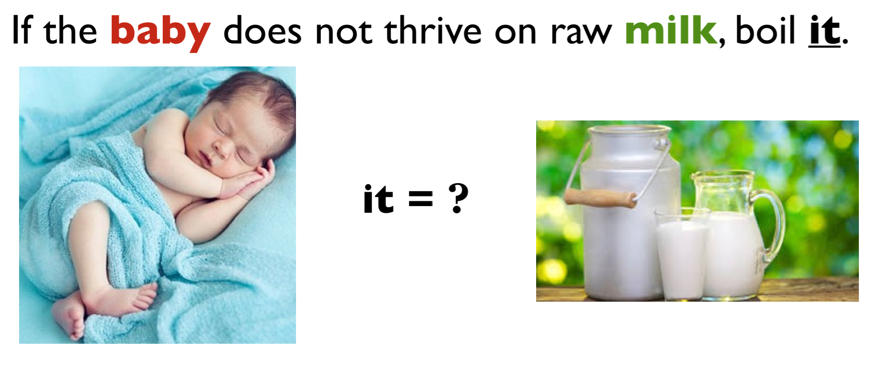
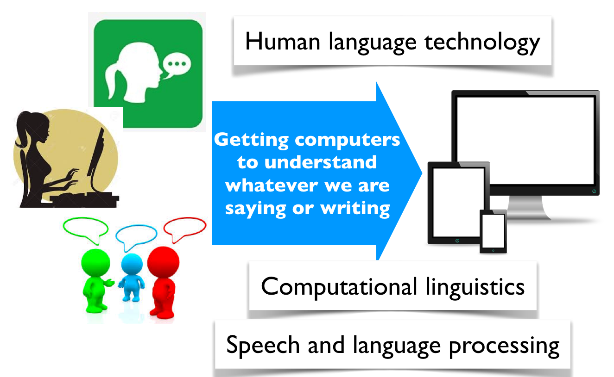
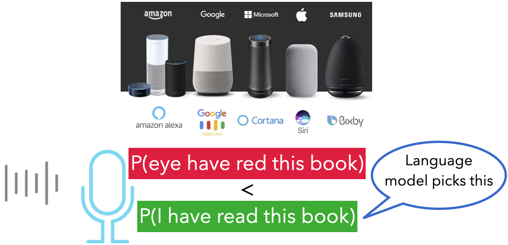

How do computers do this? 🤔

PROSTITUTES APPEAL TO POPE
KICKING BABY CONSIDERED TO BE HEALTHY
MILK DRINKERS ARE TURNING TO POWDER
Why are these funny?
Humans solve these problems effortlessly because we use
Computers don’t naturally have these abilities.
Natural Language Processing (NLP) is the field of AI that focuses on enabling computers to understand, interpret, and generate human language.

Instead of teaching computers grammar …
What if we simply taught them to predict the next word? Could that really work?
Guess the next word.
| Prompt | Your prediction |
|---|---|
| Penut butter and … | |
| Too much … | |
| My dog at my … | |
| Happy birthday … | |
| The capital of Canada is … |
There isn’t always one correct next word!!
You acted like a language model! You
A language model does exactly the same thing. It predicts the most likely continuation based on patterns it has learned from lots of text.
In 1948, Claude Shannon asked exactly the same question:
Can we predict the next word?
This simple idea became the foundation of modern language models.
(Anthropic’s Claude is named after Claude Shannon.)
A language model predicts what word (or token) is most likely to come next.
Example
| Sentence | Most likely next word |
|---|---|
| Peanut butter and | jelly |
| The capital of Canada is | Ottawa |
| Happy birthday | to |
Which word comes next?
I went to the bank to deposit some ______
vs.
I sat on the bank of the ______
Same word. Different meanings.
Language models use context.
Instead of predicting one answer…
they estimate many possibilities.
Peanut butter and
| Next word | Probability |
|---|---|
| jelly | 55% |
| banana | 25% |
| honey | 10% |
| cookies | 5% |
| … | … |
The highest probability usually becomes the prediction.
If a computer becomes really good at predicting the next word, it has learned
without being explicitly programmed.
Good next-word prediction enables
Modern LLMs like ChatGPT build on this same idea.

We need 10–15 volunteers.
Key takeaway:
The more context we have, the better we can predict what comes next.
How much context and other knowlege do you need to predict the correct next word here?
I am studying law at the University of British Columbia in Vancouver because I want to become a …
I am studying medicine at the University of British Columbia because I want to become a …
More context \(\rightarrow\) Better predictions.
The simple model we used before remembers 1 previous word.
Modern language models like GPT-5 can use up to about 300,000 previous words of context!
This is why modern language models are so powerful.
Instead of looking at just one previous word, they can use information from hundreds of thousands of previous words to understand the conversation and generate much more coherent responses.